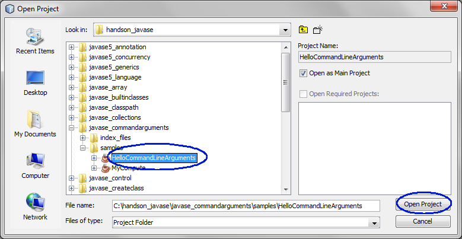
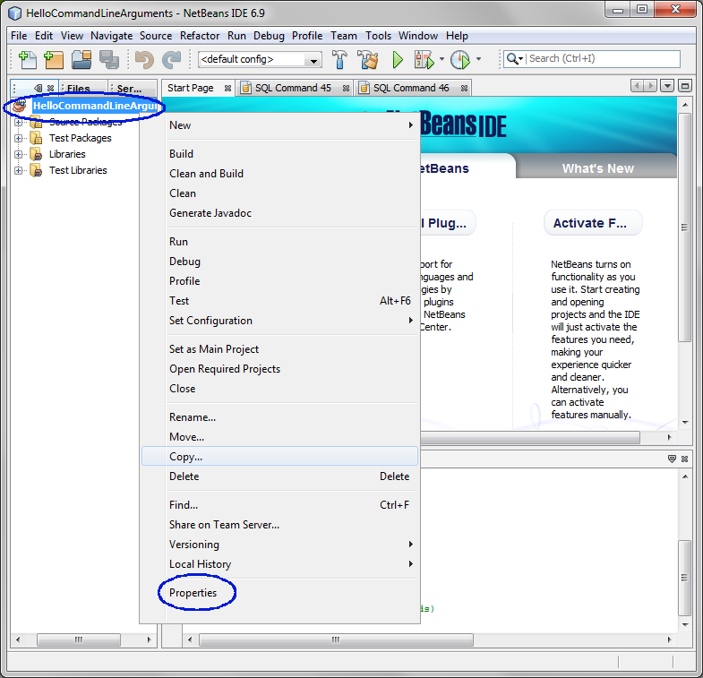
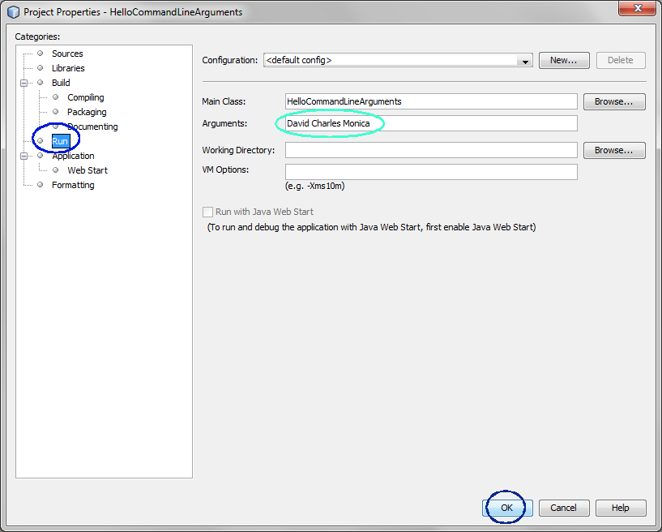
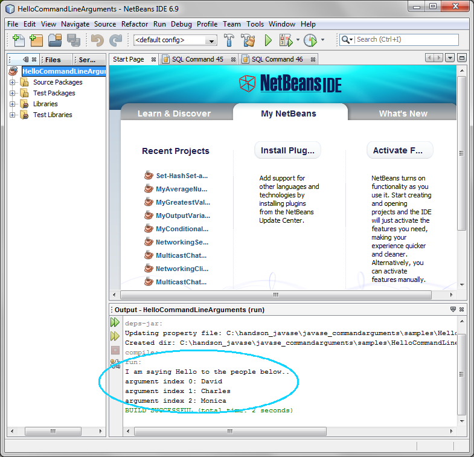
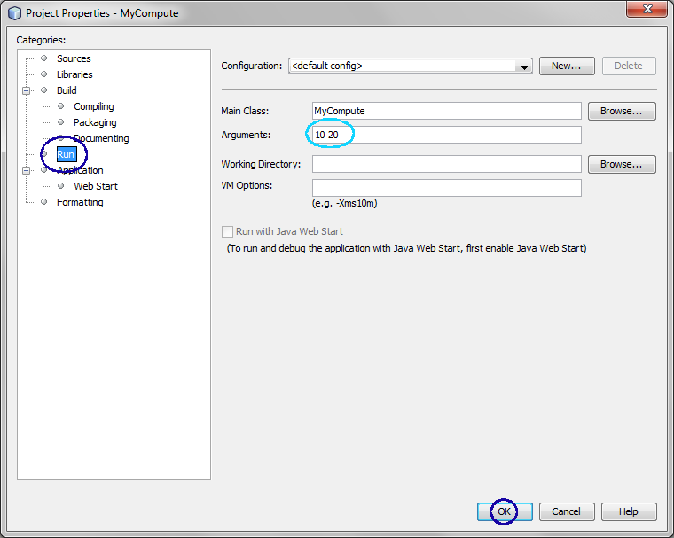
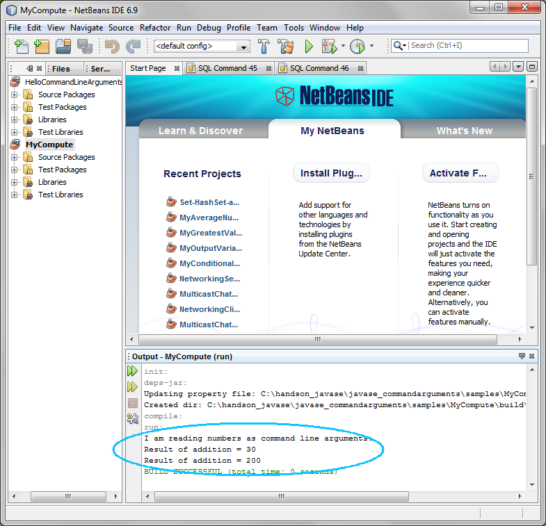

Command-line Arguments

In this hands-on lab, you will learn
how to pass command line arguments
to a Java program both at the command line
Expected duration: 30 minutes


Change Log
- Jan. 31st, 2007: Created
- July 14th, 2010: Updated with NetBeans 6.9, Lab zip file name is
changed (Sang Shin)
Lab Exercises
Exercise 1: Read command-line arguments
(1.1)
Build and run Hello Java program that receives command-line arguments
1. Go to a directory where you want to
create Java program
C:\>cd \myjavaprograms
2. Write HelloCommandLineArguments.java
using
your editor of choice such as notepad
on Windows platform or gedit on
Solaris platform (in this example, I am using jedit) as shown in Code-1.10
below.
C:\myjavaprograms>jedit HelloCommandLineArguments.java
public class
HelloCommandLineArguments {
public static void main( String[] args ){
// Print the string "Hello,
" on screen
System.out.println("I am
saying Hello to the people below.. ");
// Check if a command line
argument exists
if(args.length == 0)
System.exit(0);
// Display the arguments from the
command line
for(int counter = 0; counter <
args.length; counter++){
System.out.println("argument
index " + counter + ": " + args[counter]);
}
}
}
|
Code-1.10: HelloCommandLineArguments.java
3. Compile
HelloCommandLineArguments.java
using
javac
compiler.
C:\myjavaprograms>javac
HelloCommandLineArguments.java
4. Run the
HelloCommandLineArguments program
using
java command passing
arguments.
C:\myjavaprograms>java HelloCommandLineArguments David
Charles Young
I am saying Hello to the people below..
argument index 0: David
argument index 1: Charles
argument index 2: Young
return to top of
the exercise
(1.2)
Read numbers as arguments
1. Go to a directory where you want to
write Java source files.
C:\>cd \myjavaprograms
2. Write MyCompute.java
using
your editor of choice such as notepad on Windows platform or gedit on
Solaris platform (in this example, I am using jedit) as shown in Code-1.20
below.
C:\myjavaprograms>jedit MyCompute.java
public class MyCompute {
public static void main(String[] args) {
System.out.println("I am
reading numbers as command line arguments.. ");
// Check if a command line
argument exists
if(args.length != 2){
System.out.println("Please enter two numbers!");
System.exit(0);
}
// Display the addition of
the two numbers
int int1 =
Integer.parseInt(args[0]);
int int2 =
Integer.parseInt(args[1]);
int additionResult = int1 +
int2;
System.out.println("Result
of addition = " + additionResult);
// Display the
multiplication of the two numbers
int1 =
Integer.parseInt(args[0]);
int2 =
Integer.parseInt(args[1]);
int multiResult = int1 *
int2;
System.out.println("Result
of multiplication = " + multiResult);
}
}
|
Code-1.20: MyCompute.java
3. Compile
MyCompute.java using
javac
compiler.
C:\myjavaprograms>javac MyCompute.java
4. Run the
MyCompute program
using
java command passing
two number arguments.
C:\myjavaprograms>java MyCompute
I am reading numbers as command line arguments..
Please enter two numbers!
C:\myjavaprograms>java MyCompute 4
I am reading numbers as command line arguments..
Please enter two numbers!
C:\myjavaprograms>java MyCompute 4 6
I am reading numbers as command line arguments..
Result of addition = 10
Result of multiplication = 24
Return
to top of the exercise
Summary
In this exercise, you learned how to read
input arguments in your Java application.
Return
to the top
Exercise 2: Pass command-line arguments
using NetBeans
In this exercise, you are going to learn
how to pass arguments when you are using NetBeans. The programs
you built above are already provided as NetBeans projects.
- Open, build and run HelloCommandLineArguments
NetBeans project
- Open, build and run MyCompute NetBeans project
(2.1)
Open, build and run HelloCommandLineArguments
NetBeans
project
1. Open HelloCommandLineArugments NetBeans
project.
- Select File->Open Project (Ctrl+Shift+O). The Open Project dialog box appears.
- Browse down to <LAB_UNZIPPED_DIRECTORY>/javase_commandarguments/samples
directory.
- Windows: If you unzipped the hands-on lab zip file, 1038_javase_commandarguments.zip,
under C:\
directory, the directory to which you want
to browse down should be C:\javase_commandarguments\samples.
- Solaris/Linux: If you unzipped the 1038_javase_commandarguments.zip
file under $HOME
directory, the directory to which you want
to browse down should be $HOME/javase_commandarguments/samples.
- Select HelloCommandLineArugments.
- Click Open Project Folder.
(Figure-2.10 below)

Figure-2.10: pen HelloCommandLineArguments project
- Observe that the HelloCommandLineArugments
project node is displayed
under Projects pane of the
NetBeans IDE.
2. Pass command-line arguments
- Right click HelloCommandLineArugments
project node and select Properties.

Figure-2.11: Open Properties of the project
- Observe that the Project
Properties dialog box appears.
- Select Run under Categories section on the left.
- Observe that the Arguments
field
on the right is set with David
Charles Monica. (Figure-2.12 below)
- Click OK.

Figure-2.12: Provide command line arguments
3. Build and run the project.
- Right click HelloCommandLinekArguments
project node and select Run.
- Observe the result in the Output window of the IDE. (Figure-2.13
below)

Figure-2.13: Result
return to top of
the exercise
(2.2)
Open, build and run "MyCompute" NetBeans
project
1. Open MyCompute NetBeans
project.
- Select File->Open Project (Ctrl+Shift+O). The Open Project dialog box appears.
- Browse down to <LAB_UNZIPPED_DIRECTORY>/javase_commandarguments/samples
directory.
- Select MyCompute.
- Click Open Project Folder.
2. Pass command-line arguments
- Right click MyCompute project node and select Properties.
- Observe that the Project
Properties dialog box appears.
- Select Run under Categories section on the left.
- Observe that the Arguments
field
on the right is set with 10 20.
(Figure-2.21 below)
- Click OK.

Figure-2.21: Pass command line arguments
3. Build and run the project.
- Right click MyCompute project
node and select Run.
- Observe the result in the Output window of the IDE. (Figure-2.13
below)

Figure-2.13: Result
return to top of
the exercise
Summary
In this exercise, you learned how
to pass command-line arguments when you are using NetBeans.
return to the top
Homework
exercise
1. The homework is to create a new
NetBeans project called "MyOwnCommandLineArguments"
as following:
- Receive
the ages of the all your family members (between 3 to 6 members) as
command line arguments in the format as following (name then age)
- Monica 12 Daniel 34 Shelley 23
- Compute and display the average of the ages that were entered.
- Zip file of the
MyOwnCommandLineArguments
NetBeans project. (Someone else
should be able to open and run it as a NetBeans project.) You can
use your favorite zip utility or you can use "jar" utility that comes
with JDK as following.
- cd <parent directory that contains MyOwnCommandLineArguments
directory>
(assuming you named your project as MyOwnCommandLineArguments)
- jar cvf MyOwnCommandLineArguments.zip MyOwnCommandLineArguments
(MyOwnCommandLineArguments should
contain nbproject directory)
- Captured output screen -
name it as JavaIntro-javase_commandarguments.gif
or JavaIntro-javase_commandarguments.jpg (or
JavaIntro-javase_commandarguments.<whatever
graphics format>)
- Any screen capture that shows that your program is working is
good enough. No cosmetic polishment is required.
- If you decide to use
different IDE other than NetBeans, the zip
file should contain all the files that are needed for rebuilding the
project - war file with necessary source files is OK.